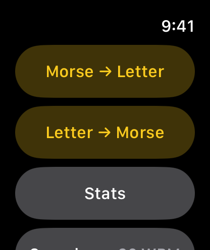
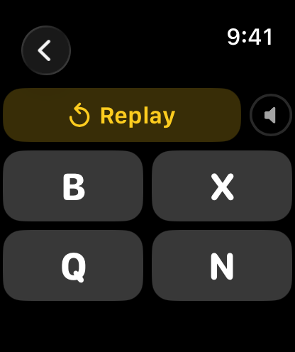
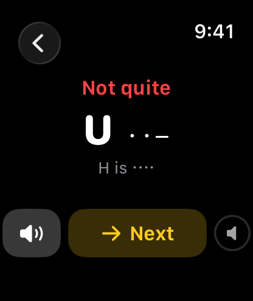
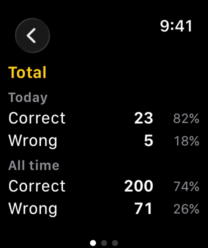

Morse Teacher Watch Special
Learn Morse code on your wrist. Hear a letter and pick it, or see a letter and tap it out with Dot and Dash. Corrections after every round, at the speed you choose, from 8 to 25 words per minute. Covers International Morse for A to Z. No iPhone needed.
Requires watchOS 8 or later.
Download


Support
Have a question, found a bug, or need help with the app? Reach out. We read every message.
Before you write
A few quick things to try first:
- App not responding? Double-press the Digital Crown to see open apps, then swipe the Morse Teacher card up to close it. Reopen from your app list.
- No sound? Turn the Digital Crown on a practice screen to raise the volume. Sound plays through the watch speaker or connected Bluetooth headphones.
- Too fast to follow? Open Speed from the menu and pick a lower rate. 8 WPM is a comfortable start.
- Letter → Morse marked wrong although the pattern looked right? Check the number of symbols and their order. Undo removes the last one before you tap Check.
Frequently Asked Questions
- Does it work without my iPhone?
Yes, fully standalone. There is no iPhone app at all. - Which characters does it cover?
The 26 letters A to Z of International Morse code, as defined in ITU-R M.1677-1. Digits and punctuation are not included in this version. - What does the speed setting mean?
The character speed in words per minute, based on the standard word PARIS. At 8 WPM a dot lasts 150 ms, at 25 WPM 48 ms. Tapping a row on the Speed screen plays a sample at that speed. - Is there a timer?
No. Replay the letter as often as you like before answering. Every round ends with the correct pattern, what you answered, and a button to hear it again. - Does each tap make a sound in Letter → Morse?
Yes. Dot and Dash each play their own tone, so you hear the pattern as you build it. - What counts in Stats?
Only completed rounds. Replays and rounds you leave before answering do not count. - Does it remember my settings?
Yes. Your practice speed is restored when you reopen the app. - Does it collect any data?
No data is collected or shared. The speed setting and practice counts stay on the watch.
Manual






Morse → Letter
- Open Morse → Letter. A letter plays right away.
- Tap Replay as many times as you need.
- Tap one of the four letters to answer.
Letter → Morse
- Open Letter → Morse. A letter is shown.
- Tap the Dot (●) and Dash (▬) keys to enter its pattern. Each tap sounds its own tone.
- Undo (⌫) removes the last symbol.
- Tap Check (✓) to answer.
Feedback
Every round ends with Correct or Not quite, the letter with its correct pattern, and what you answered. Tap the speaker button to hear it again, then Next for a new letter.
Speed
Pick the character speed from 8 to 25 WPM. Tap a row to hear a sample at that speed. Start slow and work up to what you hear on the air. The speed applies to both modes and is remembered.
Stats
Stats keep correct and wrong counts for Today and All time, each with a percentage. Swipe sideways between three pages: Total, Morse → Letter and Letter → Morse.
Morse Alphabet
| Letter | Code | Letter | Code |
|---|---|---|---|
| A | · ▬ | N | ▬ · |
| B | ▬ · · · | O | ▬ ▬ ▬ |
| C | ▬ · ▬ · | P | · ▬ ▬ · |
| D | ▬ · · | Q | ▬ ▬ · ▬ |
| E | · | R | · ▬ · |
| F | · · ▬ · | S | · · · |
| G | ▬ ▬ · | T | ▬ |
| H | · · · · | U | · · ▬ |
| I | · · | V | · · · ▬ |
| J | · ▬ ▬ ▬ | W | · ▬ ▬ |
| K | ▬ · ▬ | X | ▬ · · ▬ |
| L | · ▬ · · | Y | ▬ · ▬ ▬ |
| M | ▬ ▬ | Z | ▬ ▬ · · |
Legal
Privacy Policy
Last Updated: September 2026
Introduction
Welcome to Morse Teacher Watch Special. We are committed to respecting and protecting your privacy. This Privacy Policy outlines the type of information we collect, or in this case, do not collect, and the methods we use to ensure your privacy.
Information We Do Not Collect
Morse Teacher Watch Special is designed on a principle of zero data collection. We do not collect, store, use, share, or transfer any personal data from our users. The app operates entirely on your Apple Watch with no data processed or stored on any server.
The app keeps two things on your watch: your chosen practice speed, and your practice counts (correct and wrong answers for today and all time). They are stored only on the watch, are never sent anywhere, and are deleted when you remove the app.
The app has no network access, no user accounts, no analytics, no advertising, and no third-party code.
Third-Party Services
Morse Teacher Watch Special does not integrate with any third-party services, such as analytics tools, advertising networks, or social media platforms. No data is shared with any third party.
Children's Privacy
Since we do not collect any data, we comply with all relevant regulations related to children's privacy, such as the Children's Online Privacy Protection Act (COPPA).
Changes to This Privacy Policy
We may update our Privacy Policy from time to time. We advise you to review this page periodically for any changes. Changes are effective immediately after they are posted on this page.
Contact Us
If you have any questions or suggestions about our Privacy Policy, do not hesitate to contact us at: support [at] hoshinosoftware [dot] com